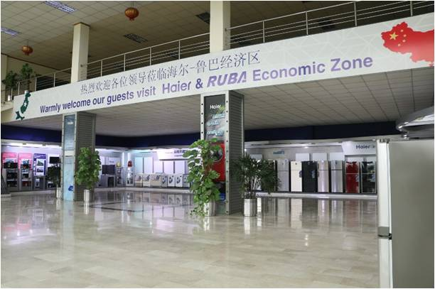
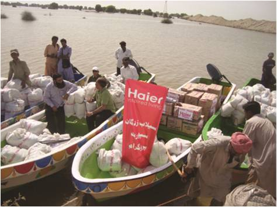
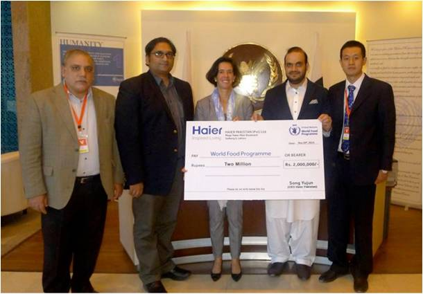
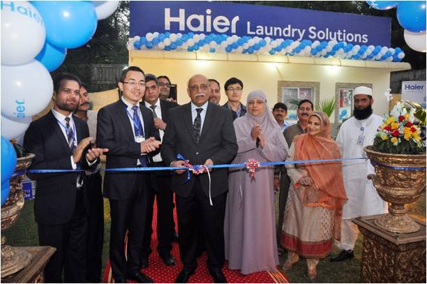

海尔集团：“一带一路”上加速奔跑的中国名片
随着我国“一带一路”国家战略的推进，率先开始全球化布局的海尔正迎来广阔的发展机遇，其全球化战略布局和模式探索也在加速进行。截至目前，在我国“一带一路”的政策东风下，海尔已经横跨亚洲、非洲、欧洲、北美洲和中东等地，在大半个地球上深化本土化战略，业务覆盖俄罗斯、巴基斯坦、印度、哈萨克斯坦、马来西亚、新加坡、泰国、沙特阿拉伯、埃及、南非、法国、意大利、荷兰、英国等多个国家和地区，为全球用户提供智慧生活解决方案。
同时，在研发、生产和营销三位一体国际化战略和创新创业两创精神的指引下，海尔始终以用户为中心、创新变革为先导，紧随时代步伐和国家政策，因地制宜，创世界名牌，探索出多种创新模式，形成了可持续、合作共赢的生态圈。无论是产品还是创新模式，海尔已然成为中国智造走出去的代表，也是“一带一路”上加速奔跑的中国名片之一。
一、因地制宜 “三位一体”深化本土化布局
海尔始终坚持研发、生产和营销三位一体的海外创牌战略，以当地用户需求为中心进行本土化创新，为海尔在“一带一路”上的持续创牌提供保障。得益于对这一战略的坚持，海尔在巴基斯坦、印度、欧洲五国等地率先布局并取得了初步成效。
1、巴基斯坦 品牌知名度排名第一
在巴基斯坦，海尔根据当地用户的使用习惯设计产品，品牌知名度和销量均名列前茅。根据华通明略2014年品牌调研显示，在巴基斯坦，目前海尔品牌知名度99%，排名第一。2014年，海尔在巴基斯坦全年销售收入则达2.3亿美元，市场份额第二，其中空调、洗衣机均排名第一。
海尔在巴基斯坦的市场表现与本土化运作密不可分。例如，针对巴基斯坦每个家庭平均人口6-7人，而且喜爱穿大袍子，海尔于2005年开发了12KG能洗大袍子的洗衣机，让用户把全家人的衣服一次性洗涤。
针对当地气候炎热且持续时间长，但能源又短缺，夏季用电高峰每天停电10小时以上等实际情况，海尔2010年发布巴基斯坦第一款直流变频空调，可节能50%，2012年又开发大容量100小时不化冻冷柜，满足用户电力短缺时的制冷需求。此外海尔还在2013年成为了当地第一家生产全自动洗衣机的企业，并在伊斯兰教地区，按照伊斯兰风格进行纹路装饰的设计。
2、欧洲 发力中高端市场
在欧洲，海尔先后建立了德国研发中心、意大利设计中心、法国营销中心，实现设计、制和营销“三位一体”本土化模式，并采用缝隙化和差异化战略成功进入中高端市场。产品层面，海尔深入洞察欧洲用户需求，设计研发了意式三门冰箱、一米宽法式对开门冰箱等一系列高端家电产品；在渠道方面，海尔深化原有渠道合作，并积极拓展主流渠道业务的延展性。以海尔一款具有静音功能的高端大容量滚筒洗衣机为例，2009年11月顺利进入德国最大的家电连锁渠道MSH，随后带领其他海尔洗衣机产品在MSH渠道的营业额同比增长了45%。目前为止，海尔产品销往欧洲30多个国家，进入了KESA、Media Market、家乐福、Expert等主流渠道和其他零售店。另外，海尔还利用互联网与用户交互，自2012年起，海尔欧洲通过Facebook、Youtube、Twitter、Google+等社交媒体平台，邀请用户参与产品设计、创意和传播，使用户成为产品的创造者、购买者和宣传大使，仅在欧洲五国，海尔Facebook忠实粉丝就已达 60万。2014年，海尔将海尔论坛、海尔实验室、产品评价、在线销售等进行整合，让用户和海尔、用户和用户之间互联互通，用户可以推荐喜爱的产品或者直接一键购买。
3、东南亚 收购整合三洋率先布局
在东南亚市场，海尔2009年开始和三洋合作，率先形成了4个工厂、6个贸易公司的网点布局。2011年，海尔收购三洋东南亚及日本共5个国家的白电家电业务，整合其优质资源，更好地为东南亚地区的用户提供本地化产品和服务。现在，海尔已在泰国实现冰箱、冷柜和洗衣机等多家工厂的本地化生产，除满足泰国本土需求外，还出口到马来西亚、菲律宾等其他东南亚国家，并销往中东、非洲、澳洲、南美等多个地区。此外，海尔还在日本、澳新等地设立研发中心，进行多品牌运营。
4、印度 业绩增速达20%
在印度，海尔从整机进口时期的缝隙产品阶段逐步进化到本土生产为主，并已经进入“三位一体”用户零距离差异化阶段。通过大量用户交互，开展本地开发设计和制造融合，海尔印度的业绩增速高达20%左右，2014年销售额达到2亿美元，如BMR冰箱、零水压洗衣机和一分钟制冷空调等多款产品一经推出，便受到众多用户一致认可。
海尔在海外24家工厂和5大研发中心为“三位一体”本土化的实施提供了基础，以用户为中心进行本土资源全球配置，为海尔在“一带一路”上的发展提供不竭动力。
二、创新探索 三大模式开创合作共赢新局面
在三位一体的海外本土化战略基础上，海尔还在“一带一路”的政策影响下探索了更多创新性的合作模式。
1、建产业园或经济贸易区
借助中国在“一带一路”沿线国家的影响力，通过本土化工业园建设提升市场份额和行业知名度，是海尔创新模式之一。目前海尔已经在巴基斯坦建成了海尔-鲁巴经济区、在印度普纳也建成了工业园区，摸索出了一条成熟的海外工业园区建设和运营之路。
2006年11月，海尔集团与巴基斯坦鲁巴集团联合建设海尔-鲁巴经济园区，开创中国企业建设国家级境外经济贸易合作区之先河。该经济区一期占地总面积33万平米，总建筑面8.7万平方米，中方投资4269.7万美元。2014年5月，海尔中标“总理青年计划”下巴教育部10万台笔记本电脑项目，并按照与巴教育部的协定，在该经济区一期建立笔记本组装线，这也是巴基斯坦第一条笔记本组装线。一期投入使用后已经有7家企业进驻，年营业额约4亿美元，带动直接就业岗位约5000个，年利税约9000万美元。
该经济区不仅为有助于海尔业务的开展，还带动周边配套企业升级，目前经济园区附近已经建立如电厂、仓储、酒店及餐饮等一系列配套设施及企业。在一期建设运营的经验和人力资源等基础上，二期将定位于家电、纺织、建材、汽车、农机等产业及配套，规划2万平方公里，投资预计达14亿元人民币。届时将吸引重型装备的制造厂商等企业，借助园区建设实现海外发展。海尔的这一模式不仅借力“一带一路”使得海尔本身得到发展，还将为更多企业提供“走出去”的平台型的服务，推动丝绸之路的发展。
除了鲁巴经济区之外，海尔几乎在同一时间在印度普纳建成了16万平方米的工业园区，加快在印度乃至整个南亚市场的布局。未来，海尔还将在其他地区复制这一成功模式。
2、搭建物流链，完善终端服务能力
对于“一带一路”沿线不适合在本地设厂的地方，随着我国“一带一路”推动当地公路、高铁、油气管道的建设，交通系统不断完善，海尔借助这个机遇搭建物流链和配送体系，完善对终端用户服务的服务能力和水平。
另外，完善物流链条之后不仅可以将海尔的产品送到“一带一路”沿线的千家万户，而且还可以帮助当地的土特产或者优势产品资源走出去，带动当地经济发展，进而为海尔家电产品销售奠定基础，实现多方共赢。
3、将基础建设红利转化为看得见的产品和服务
家电不同于水电等基础性产品，在开拓市场还需兼顾当地居民的购买能力。海尔在拓展业务之时，并非单纯销售家电，还主动参与到当地基础实施建设的升级之中，将基础设施红利和家电产品进行捆绑。以中国在拉美援建的水电项目为例，水电项目提高当地供电能力之后，海尔结合家电消费的特点，和当地政府达成采购合作，把减免的电费以电器的形式发放，把当地基础建设红利转化为数量化、可视化的产品和服务，带动当地消费，提升居民生活水平。而这种模式，海尔正在“一带一路”沿线多个国家寻求落地机会，造福沿途百姓。
三、热心公益 多渠道践行企业社会责任
公益无国界，无论企业身处何处，都要积极履行社会责任。30余年以来，海尔在全球范围内积极投身社会公益事业，在“一带一路”上，海尔同样用真情回报当地社会。据不完全统计，目前海尔集团用于社会教育事业、对口支援帮扶、扶贫救灾助残的捐款、捐物等共计五亿多元，成为海内外社会公益事业的积极力量。
2010年，巴基斯坦遭受严重洪灾，全国2000万人受灾。海尔总部、海尔巴基斯坦及海尔巴基斯坦员工捐赠十五万美元，帮助遭受洪灾的巴基斯坦民众度过难关。
海尔巴基斯坦还经营名为“EHSAAS”的社会服务组织，长期在医院和其他地方做大量的人道主义和慈善活动来帮助那些亟需帮助的人们。这些活动受到了当地政府的认可，并为海尔巴基斯坦颁发“Sitara-Esaar”奖。
2014年，海尔在旁遮普大学设立免费洗衣体验店，免费提供海尔全自动洗衣机及洗衣粉，希望借此将巴基斯坦女性从繁重洗衣劳动中解放出来。
四、加速发展 海尔助力中国智造走出去
从古代陶瓷丝绸到钢铁水电再到家电产品，从某种程度上来说，丝绸之路上的商品和贸易也折射出我国经济的发展路径，在“三位一体”本土化战略和创新模式的驱动下，以海尔为代表的家电产品走上丝绸之路，无疑代表着中国智造开始走向世界。
在“一带一路”政策的推动下，2014年，海尔集团全球营业额实现2007亿元，成为中国家电行业首个突破2000亿的企业。在海外，海尔2014年实现终端销售额34亿美元，同比增幅5%；其中欧美发达国家增幅3%，发展中国家增幅7%。世界权威市场调查机构欧睿国际(Euromonitor)发布的2014年全球大型家用电器调查数据显示：海尔大型家用电器2014年品牌零售量占全球市场的10.2%，居全球第一，大型家电零售量第六次蝉联全球第一，更首次突破两位数。同时，海尔冰箱、洗衣机、冷柜、酒柜的全球品牌零售量也分别继续蝉联全球第一，海尔已经成为中国智造走向全球的名片之一。
数据显示，海尔在海外已先后建立起7个工业园、7个海外工厂、10个ICM（即国际合作）工厂，海外的总生产能力已经达到1200多万台。而在互联网时代，海尔的“一带一路”探索还结合互联网特征，打造一个用户交互和产业互联的智慧生态圈。从硬件生产商和制造商转型成为智慧生态圈缔造者，海尔正在联合产业链多方合作伙伴，跟上“一带一路”的政策和时代发展步伐，走上一条可持续发展的快车道。